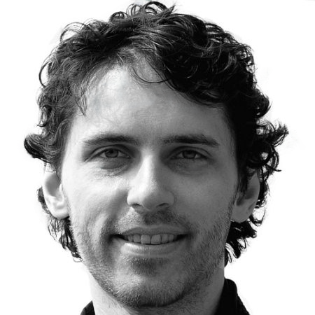

About Me
My name is Tomas Svoboda and I am a technical tester and test automation engineer with about 20 years experience in test and quality assurance. I have a passion for working with test automation, for example using Java, Python, JavaScript or TypeScript, test frameworks like Selenium, TestNG, JUnit, JBehave, Playwright, Cypress or Postman and integrated development environments like Visual Studio Code, IntelliJ or Eclipse.
During my professional career in test and QA, I have completed multiple courses and earned multiple certifications in testing frameworks and programming languages. I have also worked on some personal and professional projects that enhanced my skills and experience.
My career goal is to become a full-stack tester and work on challenging and innovative projects that bring substantial value to clients. I am always eager to learn new technologies and useful tools that can help me improve my test and development skills and knowledge. I am passionate about collaborating with fellow testers, developers, and clients to not only achieve but exceed common goals.